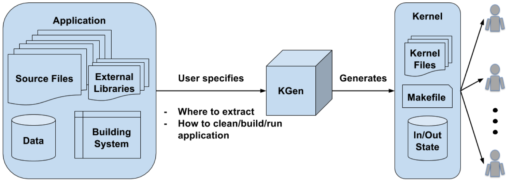

Overview¶
KGen is a Python tool that extracts partial codes out of a large Fortran application and converts them into a standalone/verifiable/executable kernel.
Kernel¶
A kernel is a small software that represents a certain characteristic of a larger application. It can be compiled and run generally without using external library on a single computing node. Due to its simple usage, it can greatly improve productivity of various software engineering tasks such as performance optimization, debugging, porting, verification, and so on.
In addition, a kernel could be an efficient vehcle for enhancing communication between collaborators possibly from various disciplines. For example, a kernel that contains a compiler bug is useful not only for reporting the bug but also for producing and fixing the bug by compiler engineer.
While a kernel is useful for many software engineering tasks, it is generally hard to create one. Mere copying and pasting an interesting block of code generally does not produce compilable software. In manual kernel extraction, it is common to scan through all source files to find required statements such as variable declaration and importing other modules. Furthermore, preparing state data for driving the execution of a generated kernel is generally harder task. For example, if a structured variable contains a pointer variable of another structured variable, user should manually copy those variables, aka, deep copying.
Fortunately, most of kernel extraction task from large Fortran application can be automated through static analysis, which is a core function of KGen.
Automated Kernel Generation: KGen¶

KGen is simple to use. First user specifies a block of code in a target Fortran software with Linux commands for clean/build/run the software. Using these information, KGen scans through all the necessary source files and marks statements that are required to make the marked block to be a standalone/executable/verifiable kernel. Current version of KGen extensively uses F2PY, an excellant Fortran parser written in Python, to generate Abstract Syntax Trees. KGen traverses the ASTs instead of actually reading text source files for collecting analysis information and eventually selects a minimal set of statements for kernel generation.
KGen also produces input data to drive kernel execution and output data to verify its corrrectness. The data generation supports Fortran derived types that can contain another derived type variables. When KGen-generated kernel is executed, the details of verification result will be automaticaly shown on screen with timing information for performance measurement.
Use Cases¶
Original use case that we had in mind when we envisioned this tool was performance optimization of large scientific applications. The application we were optimizing has been being actively developed/used by scientists around the world. To keep the pace of fast chainging code, we have to split a large task with many smaller tasks so that several enginners optimize their part of code parallely. Soon after we have this capability of automated kernel generation, it turned out that we could use this technique for other types of tasks including debugging large applications, verification of simulation result, collaborating with compiler vendors, and creating custom benchmark tests. Several kernels that have been extracted using this tool can be downloaded from github.com/NCAR/kernelOptimization github repository.
Limitations and Future works¶
KGen is still evolving under active development and there are several known limitations in current version. Some of known issues are:
- Only subset of Fortran specification is supported. Most of Fortran 95 statements should work. Some of Fortran 2003 and Fortran 77 only features are supported too. New supports will be added basically as needed.
- A variable of assumed size array is not supported for state generation
- Cyclic linked list is not supported.
- Pointer variable that is associated with part of input state to the kernel may ( or may not) generate issues depending on the usage of the variable within the extracted kernel
–